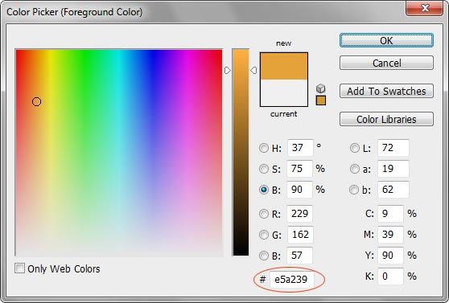

Единицы цвета в CSS
Цвета широко используются в CSS для изменения цвета текста, цвет фона, градиентов, теней, границ и др. Есть несколько способов задать цвета в CSS, каждый со своими плюсами и минусами.
Свойство color определяет цвет текста. Это довольно просто. Что более важно — есть разные доступные типы единиц цвета.
Названия цветов
CSS предлагает 145 названий цветов, от самых простых (black, white, orange, yellow, blue и др.) до более специфичных (lawngreen, orchid, crimson и др.).
body { color: black; }
a { color: orange; }Поскольку названия цветов трудно запомнить и вы, вероятно, хотите весьма конкретные цвета, названия цветов используется не часто.
rgb()
Компьютерные мониторы, телевизоры, мобильные телефоны, все они используют цветовую модель RGB для отображения цветов. В основном, каждый цвет определяется сочетанием красного, зелёного и синего. Есть 256 возможных значений для красного, зелёного или синего цвета. Поскольку компьютеры начинают считать с нуля, максимальное значение равно 255.
Принимая во внимание, что цвет является результатом сочетания красного, зелёного и синего, а также потому что у каждого из этих трёх цветов есть 256 возможных значений, существует 256 * 256 * 256 = 16777216 возможных цветов.
Поскольку модель RGB напрямую связана с тем, как цвета физически визуализируются, она стала единицей цвета в CSS.
Например, красный цвет на сайте Marksheet.io — это 219 красного, 78 зелёного и 68 синего:
a { color: rgb(219, 78, 68); }Чёрный цвет получается, когда нет никакого количество красного, зелёного или синего цвета:
body { color: rgb(0, 0, 0); }С другой стороны спектра, белый — это полное количество каждого красного, зелёного и синего:
body { color: rgb(255, 255, 255); }rgba()
Единица цвета rgba() — это rgb(), к которому мы добавляем значение альфа (в диапазоне от 0 до 1 в десятичном значении), она определяет прозрачность цвета:
body { color: rgba(0, 0, 0, 0.8); }Слегка прозрачный чёрный цвет.
Задавать цвет прозрачным требуется для смешивания с фоном, в результате цвет будет выглядеть по разному в зависимости от контекста. Это особенно полезно для цвета фона.
hsl() и hsla()
HSL — это ещё один способ задать цвет. Думайте об этом как о цветовом круге.

Вместо комбинации красного, зелёного и синего цветов, вы указываете:
- оттенок — значение в диапазоне от 0 до 360; определяет, какой цвет вы хотите;
- насыщенность — в диапазоне от 0% до 100%; определяет, сколько этого цвета вы хотите;
- яркость — в диапазоне от 0% до 100%; определяет, насколько ярким вы желаете цвет.
Опять же, красный цвет на сайте Marksheet.io в hsl():
a { color: hsl(4, 68%, 56%); }4 указывает на то, что это красный; 68% указывает что красный довольно заметный; 56% указывает половину между чёрным и белым.
Цвет в hsl() легче для понимания чем rgb(), потому что ожидаемый результат очевиднее. Вы в основном определяете цвет за три разных шага и можете играть с каждым значением для получения желаемого цвета. Если вы хотите жёлтый оттенок, то можете начать со значения hsl(50, 68%, 56%) и поменять значения насыщенности и яркости, чтобы найти конкретный оттенок, который вы ищете.
Я считаю, что hsl() более удобен для восприятия человеком, тогда как rgb() более ориентирован на компьютеры.
hsla() является таким же, что и hsl(), к которому добавляется значение альфа:
body { color: hsla(4, 68%, 56%, 0.5); }Полупрозрачный красный цвет.
Шестнадцатеричное
Цвета в CSS могут быть также определены через шестнадцатеричные значения, вроде #db4e44.
Для понимания, что такое шестнадцатеричные значения, давайте посмотрим, как работают двоичные и десятичные:
| двоичные, 2 возможных значения | 0 | 1 | ||||||||||||||
|---|---|---|---|---|---|---|---|---|---|---|---|---|---|---|---|---|
| десятичные, 10 возможных значений | 0 | 1 | 2 | 3 | 4 | 5 | 6 | 7 | 8 | 9 | ||||||
| шестнадцатеричные, 16 возможных значений | 0 | 1 | 2 | 3 | 4 | 5 | 6 | 7 | 8 | 9 | A | B | C | D | E | F |
Принимаются во внимание цифры 0-9 и буквы A-F в виде символов.
Люди используют десятичную систему. У нас есть 10 символов для формирования чисел.
В шестнадцатеричной системе у нас есть 16 символов для формирования чисел. Поскольку 0-9 недостаточно, мы также используем A-F. И всё начинается с нуля. Итак:
- цифра 4 в шестнадцатеричной системе — это 4;
- число 12 в шестнадцатеричной системе — это C;
- число 16 в шестнадцатеричной системе — это 10, потому что после того как закончатся символы (последний из которых F), вы добавляете второй символ слева и повышаете на единицу (0 становится 1), а правая часть начинается снова (от F до 0).
Должен ли я помнить об этом?
Ни за что! Здесь я объяснил, как работают шестнадцатеричные значения. Самое главное, это помнить о том, что есть 16 шестнадцатеричных символов.
Подобно RGB, шестнадцатеричное значение цвета представляет собой сочетание красного, зелёного и синего, причём каждый из них представляют в шестнадцатеричном значении, например DB для красного, 4E для зелёного и 44 для синего.
Поскольку красный, зелёный или синий может содержать только два символа, их возможные значения 16 *16 = 256, что отражает цвет в RGB!
Почему бы тогда не использовать RGB?
Как правило, при выборе цвета вы не пишете его напрямую. Вы либо используете палитру цветов или копируете/вставляете его из Photoshop или выбираете цветовую палитру где-то ещё.
Шестнадцатеричные значения легче копировать и вставлять, так как они содержат только шесть символов.

Проще скопировать и вставить единственное поле, чем три отдельных.
В CSS вам нужно всего лишь добавить перед шестнадцатеричным значением цвета решётку (#).
Какой способ выбрать?
Если вы не намерены использовать любой прозрачный цвет, придерживайтесь шестнадцатеричных значений, так как их проще копировать/вставить и они не займут много места в вашем коде.
Если вы хотите некоторую прозрачность, преобразуйте цвет из шестнадцатеричного значения в RGBA и используйте для цвета rgba().
Если вы хотите поиграть с вашим цветом непосредственно в браузере, попробуйте hsl().
См. также

Все материалы сайта доступны по лицензии Creative Commons «Attribution-NonCommercial» («Атрибуция — Некоммерческое использование») 4.0 Всемирная, если не указано иное.